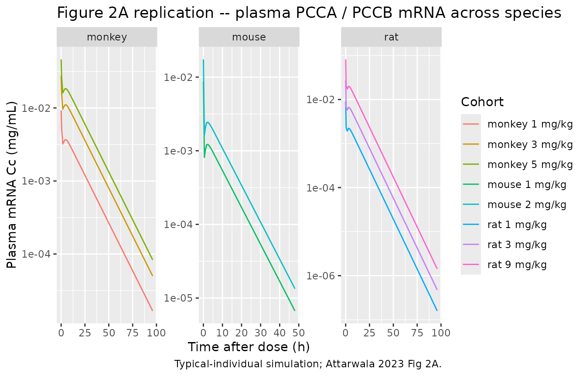
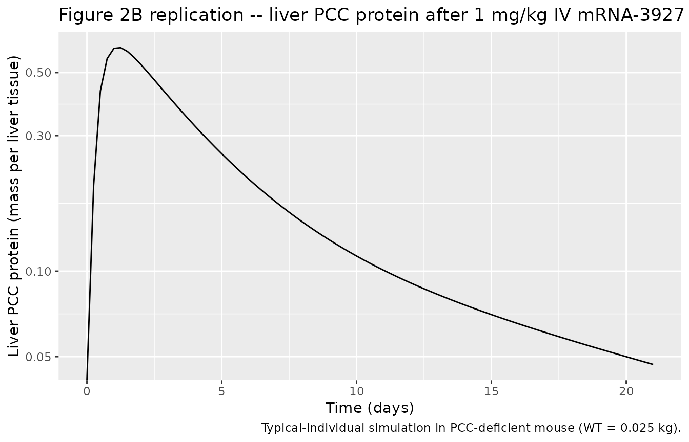
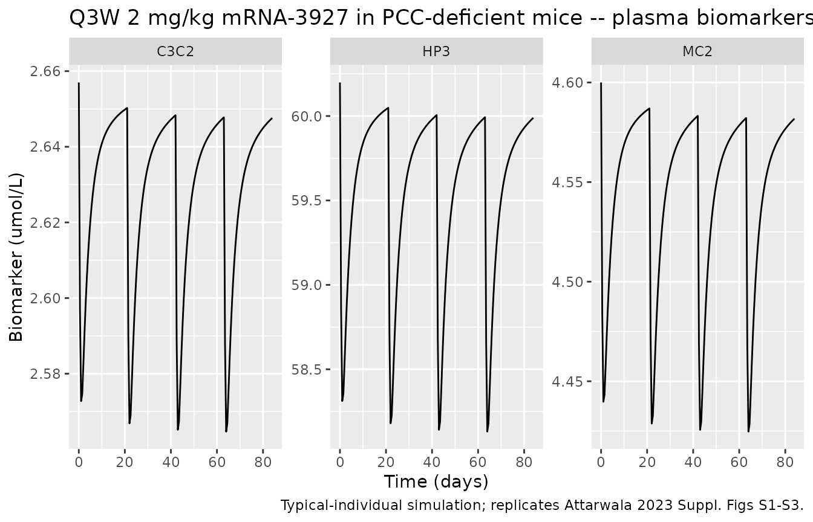
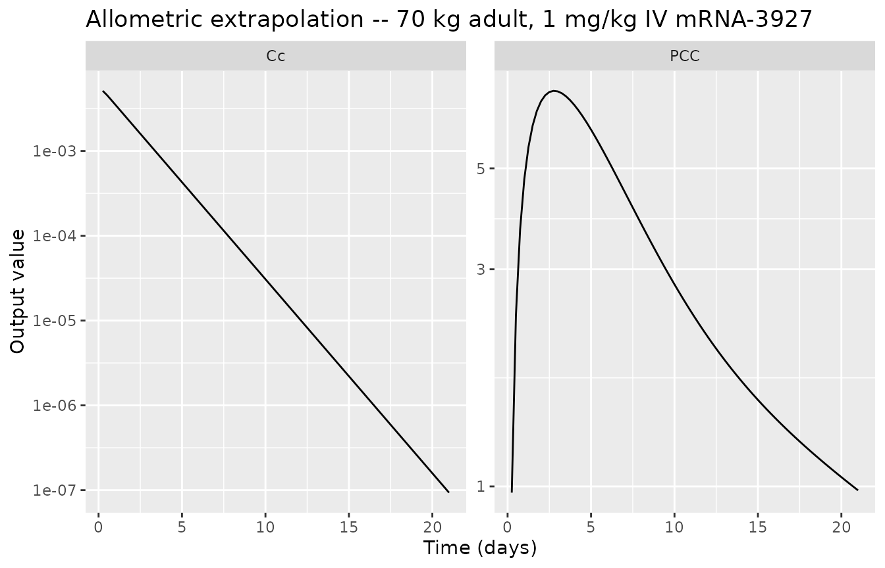

Attarwala_2023_mRNA3927
Source:vignettes/articles/Attarwala_2023_mRNA3927.Rmd
Attarwala_2023_mRNA3927.RmdModel and source
- Citation: Attarwala H, Lumley M, Liang M, Ivaturi V, Senn J. Translational Pharmacokinetic/Pharmacodynamic Model for mRNA-3927, an Investigational Therapeutic for the Treatment of Propionic Acidemia. Nucleic Acid Ther. 2023;33(2):141-147. doi:10.1089/nat.2022.0036
- Description: Preclinical (mouse, rat, cynomolgus monkey; allometrically scalable to humans). Translational semi-mechanistic PK and PK/PD model for mRNA-3927, an LNP-encapsulated dual mRNA encoding propionyl-CoA carboxylase (PCC) subunits PCCA and PCCB. PK: 3-compartment plasma1-tissue-plasma2 redistribution (V shared between the two plasma compartments; V and V2 fixed at the mouse reference and scaled allometrically) with body-weight allometric scaling of clearances (mouse reference 0.025 kg; estimated exponents cla on CL12/CL32 and clb on CL23/CL20). PD: liver PCC protein 2-compartment indirect-response model driven by an effect compartment linked to plasma mRNA, with synthesis linear in effect-compartment mRNA concentration and first-order degradation. Three downstream biomarkers (2-methylcitrate, 3-hydroxypropionate, C3/C2 carnitine ratio) follow direct sigmoidal Imax suppression by liver PCC protein with Imax fixed at 0.999.
- Article: https://doi.org/10.1089/nat.2022.0036
- PMC supplements:
- Supplementary Table S1 (model equations): https://www.ebi.ac.uk/europepmc/webservices/rest/PMC10066765/supplementaryFiles
- Supplementary Figures S1-S3 (individual fits): same archive
mRNA-3927 is an investigational lipid-nanoparticle (LNP)
drug product containing two messenger RNAs that encode the PCCA and PCCB
subunits of propionyl-CoA carboxylase (PCC), the deficient enzyme in
propionic acidemia (PA). The translational PK/PD model in Attarwala 2023
was fit jointly across mouse, rat, and cynomolgus monkey PK data, then
extrapolated allometrically to humans to support first-in-human dose
selection for the Phase 1/2 study NCT04159103.
Population
The published model is anchored to preclinical data (Attarwala 2023, Methods, p. 142):
- PCC-deficient mice (strain 4011020 (A138T) PCCA -/-), N = 111. Body weight reference: 0.025 kg.
- Juvenile Sprague-Dawley rats, N = 19. Body weight: not tabulated; typical juvenile SD rat ~0.20 kg.
- Cynomolgus monkeys, N = 16. Body weight: not tabulated; typical cyno ~3 kg.
PCC pharmacodynamic data (PCC protein time-course; 2-MC, 3-HP, C3/C2 ratio biomarkers) are mouse-only. The interspecies PK fit drives the human-extrapolation use case described in the Discussion (Attarwala 2023, p. 145).
Source trace
Parameter origin is recorded in-file alongside each
ini() entry. The table below lists each parameter and its
source location.
| Parameter | Value (mouse reference) | Source |
|---|---|---|
| lcl12 = log(19.7) | CL12 = 19.7 mL/h | Attarwala 2023 Table 1, RSE 23.1% |
| lcl23 = log(0.215) | CL23 = 0.215 mL/h | Attarwala 2023 Table 1, RSE 35.9% |
| lcl32 = log(2.96) | CL32 = 2.96 mL/h | Attarwala 2023 Table 1, RSE 48.2% |
| lcl20 = log(0.136) | CL20 = 0.136 mL/h | Attarwala 2023 Table 1, RSE 3.78% |
| lvc = fixed(log(2.67)) | V (plasma1, plasma2) = 2.67 mL | Attarwala 2023 Table 1 footnote f, fixed |
| lvp = fixed(log(0.961)) | V2 (tissue) = 0.961 mL | Attarwala 2023 Table 1 footnote f, fixed |
| e_wt_cla = 0.631 | Allometric exp on CL12 / CL32 | Attarwala 2023 Table 1, RSE 9.2% |
| e_wt_clb = 1.10 | Allometric exp on CL23 / CL20 | Attarwala 2023 Table 1, RSE 7.55% |
| etalcl32 ~ 0.245 | IIV on CL32 = 52.7% CV | Attarwala 2023 Table 1; log(1 + 0.527^2) = 0.245 |
| propSd = 0.375 | Proportional residual on plasma mRNA = 37.5% | Attarwala 2023 Table 1, RSE 11.0% |
| lke0 = log(0.242) | ke0 = 0.242 /h | Attarwala 2023 Table 1, RSE 3.35% |
| lslope = log(55.6) | Slope = 55.6 (mg/g/h)/(mg/mL) | Attarwala 2023 Table 1, RSE 1.93% |
| lkdeg = log(0.0075) | kdeg = 0.0075 /h | Attarwala 2023 Table 1, RSE 2.82% |
| lkq = log(0.00474) | kq = 0.00474 /h | Attarwala 2023 Table 1, RSE 6.7% |
| propSd_PCC = 0.305 | Proportional residual on PCC = 30.5% | Attarwala 2023 Table 1, RSE 0.02% |
| imax = fixed(0.999) | Imax = 0.999 (fixed) | Attarwala 2023 Table 1 footnote m |
| le0_mc2 = log(1.67) | E0 2-MC = 1.67 umol/L | Attarwala 2023 Table 1, RSE 4.46% |
| lbase_mc2 = log(2.93) | 2-MC suppressible baseline = 2.93 umol/L | Attarwala 2023 Table 1, RSE 6.66% |
| lic50_mc2 = log(21.0) | IC50 2-MC = 21.0 (PCC mass per liver tissue) | Attarwala 2023 Table 1, RSE 8.96% |
| etale0_mc2 ~ 0.0862 | IIV E0 2-MC = 30.0% CV | Attarwala 2023 Table 1; log(1 + 0.300^2) = 0.0862 |
| etalbase_mc2 ~ 0.1874 | IIV base 2-MC = 45.4% CV | Attarwala 2023 Table 1; log(1 + 0.454^2) = 0.1874 |
| propSd_MC2 = 0.234 | Proportional residual 2-MC = 23.4% | Attarwala 2023 Table 1, RSE 3.84% |
| le0_hp3 = log(0.0987) | E0 3-HP = 0.0987 umol/L | Attarwala 2023 Table 1, RSE 6.74% |
| lbase_hp3 = log(60.1) | 3-HP suppressible baseline = 60.1 umol/L | Attarwala 2023 Table 1, RSE 14.4% |
| lic50_hp3 = log(37.5) | IC50 3-HP = 37.5 (PCC mass per liver tissue) | Attarwala 2023 Table 1, RSE 12.2% |
| etale0_hp3 ~ 0.2320 | IIV E0 3-HP = 51.1% CV | Attarwala 2023 Table 1; log(1 + 0.511^2) = 0.2320 |
| etalbase_hp3 ~ 0.4348 | IIV base 3-HP = 73.8% CV | Attarwala 2023 Table 1; log(1 + 0.738^2) = 0.4348 |
| propSd_HP3 = 0.348 | Proportional residual 3-HP = 34.8% | Attarwala 2023 Table 1, RSE 5.56% |
| le0_c3c2 = log(0.347) | E0 C3/C2 = 0.347 umol/L | Attarwala 2023 Table 1, RSE 6.4% |
| lbase_c3c2 = log(2.31) | C3/C2 suppressible baseline = 2.31 umol/L | Attarwala 2023 Table 1, RSE 6.61% |
| lic50_c3c2 = log(32.1) | IC50 C3/C2 = 32.1 (PCC mass per liver tissue) | Attarwala 2023 Table 1, RSE 11.7% |
| etale0_c3c2 ~ 0.2385 | IIV E0 C3/C2 = 51.9% CV | Attarwala 2023 Table 1; log(1 + 0.519^2) = 0.2385 |
| etalbase_c3c2 ~ 0.2762 | IIV base C3/C2 = 56.4% CV | Attarwala 2023 Table 1; log(1 + 0.564^2) = 0.2762 |
| propSd_C3C2 = 0.360 | Proportional residual C3/C2 = 36.0% | Attarwala 2023 Table 1, RSE 4.79% |
The structural equations come from Supplementary Table S1:
| Block | Equation |
|---|---|
| (A) PK |
d(A1)/dt = input - CL12 * C1;
d(A2)/dt = CL12 * C1 - CL23 * C2 + CL32 * C3 - CL20 * C2;
d(A3)/dt = CL23 * C2 - CL32 * C3; observation
C13 = C1 + C3
|
| (A) Allometric |
CL12 = tvCL12 * (BW / 0.025)^cla; same exponent on
CL32. CL23 = tvCL23 * (BW / 0.025)^clb; same exponent on
CL20. V = tvV * (BW / 0.025)^1;
V2 = tvV2 * (BW / 0.025)^1. |
| (B) PD effect | d(Ce)/dt = Ke0 * (C13 - Ce) |
| (B) PCC protein |
d(PCC)/dt = Slope * Ce + Kq * (PCP - PCC) - Kdeg * PCC;
d(PCP)/dt = Kq * (PCC - PCP)
|
| (C) Biomarkers | for each B in {2-MC, 3-HP, C3/C2}:
B = E0_B + base_B * (1 - Imax * PCC / (IC50_B + PCC)), Imax
fixed at 0.999. |
Virtual cohort
We replicate Figure 2A by simulating typical-individual time profiles at each species-dose combination reported in Attarwala 2023 (mouse 1 and 2 mg/kg; rat 1, 3, 9 mg/kg; monkey 1, 3, 5 mg/kg). The simulation uses the package’s typical-value parameterisation (no IIV, no residual error) so each cohort profile is a single deterministic trace driven by the published parameter estimates.
make_cohort <- function(id, species, body_weight_kg, dose_mg_per_kg,
t_obs, dose_times_h = 0) {
amt_mg <- dose_mg_per_kg * body_weight_kg
dose_rows <- tibble::tibble(
id = id,
time = dose_times_h,
amt = amt_mg,
evid = 1L,
cmt = "central",
WT = body_weight_kg,
species = species,
dose_label = sprintf("%s %s mg/kg", species, format(dose_mg_per_kg))
)
obs_rows <- tibble::tibble(
id = id,
time = t_obs,
amt = 0,
evid = 0L,
cmt = "Cc",
WT = body_weight_kg,
species = species,
dose_label = sprintf("%s %s mg/kg", species, format(dose_mg_per_kg))
)
dplyr::bind_rows(dose_rows, obs_rows) |>
dplyr::arrange(time, dplyr::desc(evid))
}
# Single-dose PK cohorts (Attarwala 2023 Figure 2A):
# mouse 0-48 h after 1 / 2 mg/kg
# rat 0-96 h after 1 / 3 / 9 mg/kg
# monkey 0-96 h after 1 / 3 / 5 mg/kg
t_mouse <- c(0.01, seq(0.5, 48, length.out = 80))
t_animal <- c(0.01, seq(0.5, 96, length.out = 80))
cohorts_pk <- dplyr::bind_rows(
make_cohort( 1L, "mouse", 0.025, 1, t_obs = t_mouse),
make_cohort( 2L, "mouse", 0.025, 2, t_obs = t_mouse),
make_cohort( 3L, "rat", 0.20, 1, t_obs = t_animal),
make_cohort( 4L, "rat", 0.20, 3, t_obs = t_animal),
make_cohort( 5L, "rat", 0.20, 9, t_obs = t_animal),
make_cohort( 6L, "monkey", 3.0, 1, t_obs = t_animal),
make_cohort( 7L, "monkey", 3.0, 3, t_obs = t_animal),
make_cohort( 8L, "monkey", 3.0, 5, t_obs = t_animal)
)
stopifnot(!anyDuplicated(unique(cohorts_pk[, c("id", "time", "evid")])))Simulation
mod_typical <- readModelDb("Attarwala_2023_mRNA3927") |> rxode2::zeroRe()
#> ℹ parameter labels from comments will be replaced by 'label()'
sim_pk <- rxode2::rxSolve(
mod_typical,
events = cohorts_pk,
keep = c("species", "dose_label")
) |> as.data.frame()
#> ℹ omega/sigma items treated as zero: 'etalcl32', 'etale0_mc2', 'etalbase_mc2', 'etale0_hp3', 'etalbase_hp3', 'etale0_c3c2', 'etalbase_c3c2'
#> Warning: multi-subject simulation without without 'omega'Figure 2A – plasma mRNA across species and doses
Attarwala 2023 Figure 2A shows observed plus fitted plasma mRNA concentrations on a log y-axis for mouse 1 / 2 mg/kg, rat 1 / 3 / 9 mg/kg, and monkey 1 / 3 / 5 mg/kg. The figure below reproduces the typical-value model trajectories for each cohort. Concentration units follow Supplementary Table S1 (V in mL, dose in mg, so Cc in mg/mL). Observed-data overlays are not available because the preclinical dataset has not been released; this figure replicates the “population predicted” black curve in Figure 2A.
sim_pk |>
dplyr::filter(time > 0) |>
ggplot(aes(time, Cc, group = dose_label, colour = dose_label)) +
geom_line() +
facet_wrap(~ species, scales = "free", nrow = 1) +
scale_y_log10() +
labs(x = "Time after dose (h)", y = "Plasma mRNA Cc (mg/mL)",
colour = "Cohort",
title = "Figure 2A replication -- plasma PCCA / PCCB mRNA across species",
caption = "Typical-individual simulation; Attarwala 2023 Fig 2A.")
Figure 2B – liver PCC protein time course after a single 1 mg/kg IV bolus in PCC-deficient mice
t_pcc <- seq(0, 21, by = 0.25) * 24 # 0-21 days, expressed in hours
pcc_dose <- tibble::tibble(id = 1L, time = 0, amt = 0.025, evid = 1L,
cmt = "central", WT = 0.025)
pcc_obs <- tibble::tibble(id = 1L, time = t_pcc, amt = 0, evid = 0L,
cmt = "PCC", WT = 0.025)
pcc_events <- dplyr::bind_rows(pcc_dose, pcc_obs) |>
dplyr::arrange(time, dplyr::desc(evid))
sim_pcc <- rxode2::rxSolve(mod_typical, events = pcc_events) |> as.data.frame()
#> ℹ omega/sigma items treated as zero: 'etalcl32', 'etale0_mc2', 'etalbase_mc2', 'etale0_hp3', 'etalbase_hp3', 'etale0_c3c2', 'etalbase_c3c2'
ggplot(sim_pcc |> dplyr::mutate(day = time / 24), aes(day, PCC)) +
geom_line() +
scale_y_log10() +
labs(x = "Time (days)", y = "Liver PCC protein (mass per liver tissue)",
title = "Figure 2B replication -- liver PCC protein after 1 mg/kg IV mRNA-3927",
caption = "Typical-individual simulation in PCC-deficient mouse (WT = 0.025 kg).")
#> Warning in scale_y_log10(): log-10 transformation introduced
#> infinite values.
Q3W multi-dose biomarker dynamics in mice
Figure 3 and Supplementary Figures S1-S3 in Attarwala 2023 show 2-MC, 3-HP, and C3/C2 ratio responses after q3W dosing of mRNA-3927 in PCC-deficient mice. Below we simulate the 2 mg/kg q3W x 4 cohort and plot the three plasma biomarkers; the paper reports near-maximal suppression at q3W doses of >= 2 mg/kg.
q3w_times_h <- (0:3) * 21 * 24
biom_obs_h <- seq(0, 12 * 7, by = 0.5) * 24 # 0-84 days, every 12 h
biom_events <- dplyr::bind_rows(
tibble::tibble(id = 1L, time = q3w_times_h, amt = 0.025 * 2, evid = 1L,
cmt = "central", WT = 0.025),
tibble::tibble(id = 1L, time = biom_obs_h, amt = 0, evid = 0L,
cmt = "MC2", WT = 0.025),
tibble::tibble(id = 1L, time = biom_obs_h, amt = 0, evid = 0L,
cmt = "HP3", WT = 0.025),
tibble::tibble(id = 1L, time = biom_obs_h, amt = 0, evid = 0L,
cmt = "C3C2", WT = 0.025)
) |> dplyr::arrange(time, dplyr::desc(evid))
sim_biom <- rxode2::rxSolve(mod_typical, events = biom_events) |>
as.data.frame()
#> ℹ omega/sigma items treated as zero: 'etalcl32', 'etale0_mc2', 'etalbase_mc2', 'etale0_hp3', 'etalbase_hp3', 'etale0_c3c2', 'etalbase_c3c2'
biom_long <- sim_biom |>
dplyr::select(time, MC2, HP3, C3C2) |>
tidyr::pivot_longer(c(MC2, HP3, C3C2), names_to = "biomarker", values_to = "value") |>
dplyr::mutate(day = time / 24)
ggplot(biom_long, aes(day, value)) +
geom_line() +
facet_wrap(~ biomarker, scales = "free_y") +
labs(x = "Time (days)", y = "Biomarker (umol/L)",
title = "Q3W 2 mg/kg mRNA-3927 in PCC-deficient mice -- plasma biomarkers",
caption = "Typical-individual simulation; replicates Attarwala 2023 Suppl. Figs S1-S3.")
Human allometric extrapolation
The paper’s stated use of the model is to extrapolate to humans by setting body weight in the allometric scaling expressions to a human value (Discussion, p. 145). We illustrate a 70 kg adult receiving 1 mg/kg IV mRNA-3927 over 21 days; both plasma mRNA (Cc) and liver PCC protein (PCC) are shown.
t_human_h <- seq(0, 21, by = 0.25) * 24
human_events <- dplyr::bind_rows(
tibble::tibble(id = 1L, time = 0, amt = 70, evid = 1L,
cmt = "central", WT = 70),
tibble::tibble(id = 1L, time = t_human_h, amt = 0, evid = 0L,
cmt = "Cc", WT = 70),
tibble::tibble(id = 1L, time = t_human_h, amt = 0, evid = 0L,
cmt = "PCC", WT = 70)
) |> dplyr::arrange(time, dplyr::desc(evid))
sim_human <- rxode2::rxSolve(mod_typical, events = human_events) |>
as.data.frame()
#> ℹ omega/sigma items treated as zero: 'etalcl32', 'etale0_mc2', 'etalbase_mc2', 'etale0_hp3', 'etalbase_hp3', 'etale0_c3c2', 'etalbase_c3c2'
sim_human |>
dplyr::filter(time > 0) |>
dplyr::mutate(day = time / 24) |>
tidyr::pivot_longer(c(Cc, PCC), names_to = "Output", values_to = "Value") |>
ggplot(aes(day, Value)) +
geom_line() +
facet_wrap(~ Output, scales = "free_y") +
scale_y_log10() +
labs(x = "Time (days)", y = "Output value",
title = "Allometric extrapolation -- 70 kg adult, 1 mg/kg IV mRNA-3927")
PKNCA validation – plasma PCCA / PCCB mRNA (single-dose, mouse 1 mg/kg)
Attarwala 2023 does not tabulate NCA parameters for plasma mRNA, so this section serves as an internal numerical check that the simulated single-dose PK profile yields plausible NCA metrics rather than a side-by-side comparison against the source.
pknca_t <- c(0.01, 0.25, 0.5, seq(1, 48, by = 1))
pknca_dose <- tibble::tibble(id = 1L, time = 0, amt = 0.025, evid = 1L,
cmt = "central", WT = 0.025)
pknca_obs <- tibble::tibble(id = 1L, time = pknca_t, amt = 0, evid = 0L,
cmt = "Cc", WT = 0.025)
pknca_events <- dplyr::bind_rows(pknca_dose, pknca_obs) |>
dplyr::mutate(treatment = "mouse_1_mgkg") |>
dplyr::arrange(time, dplyr::desc(evid))
sim_pknca <- rxode2::rxSolve(mod_typical, events = pknca_events,
keep = c("treatment")) |>
as.data.frame() |>
dplyr::mutate(id = 1L)
#> ℹ omega/sigma items treated as zero: 'etalcl32', 'etale0_mc2', 'etalbase_mc2', 'etale0_hp3', 'etalbase_hp3', 'etale0_c3c2', 'etalbase_c3c2'
conc_df <- sim_pknca |>
dplyr::filter(!is.na(Cc), time > 0) |>
dplyr::select(id, time, Cc, treatment)
dose_df <- pknca_events |>
dplyr::filter(evid == 1L) |>
dplyr::mutate(treatment = "mouse_1_mgkg") |>
dplyr::select(id, time, amt, treatment)
conc_obj <- PKNCA::PKNCAconc(conc_df, Cc ~ time | treatment + id)
dose_obj <- PKNCA::PKNCAdose(dose_df, amt ~ time | treatment + id)
intervals <- data.frame(
start = 0,
end = 48,
cmax = TRUE,
tmax = TRUE,
auclast = TRUE,
half.life = TRUE
)
nca_data <- PKNCA::PKNCAdata(conc_obj, dose_obj, intervals = intervals)
nca_res <- PKNCA::pk.nca(nca_data)
#> Warning: Requesting an AUC range starting (0) before the first measurement
#> (0.01) is not allowed
summary(nca_res)
#> start end treatment N auclast cmax tmax half.life
#> 0 48 mouse_1_mgkg 1 NC 0.00870 0.0100 6.02
#>
#> Caption: auclast, cmax: geometric mean and geometric coefficient of variation; tmax: median and range; half.life: arithmetic mean and standard deviation; N: number of subjectsAssumptions and deviations
-
Supplement equation typo. Supplementary Table S1
(B) writes the central PCC ODE as
d(PCC)/dt = Ksyn * Ce + Kq*(PCP - PCC) - Kdeg * PCCwithKsyn = Ce * Slope. Taken literally this is quadratic inCe, which conflicts with (i) the main text, which states PCC synthesis is “a linear function of plasma PCCA/B mRNA concentration” (p. 143), and (ii) the Slope units(mg/g/h)/(mg/mL), which directly convertCe (mg/mL)to a synthesis rate(mg/g/h). We implement the linear-in-Ce form:d(PCC)/dt = Slope * Ce + Kq*(PCP - PCC) - Kdeg * PCC. -
Compartment names. Per the nlmixr2lib naming
convention, plasma 1 (A1) is mapped to
central, tissue (A2) toperipheral1, and plasma 2 (A3) toperipheral2. Both plasma compartments share the same volumevc; tissue has its own volumevp. This re-mapping does not change the equations; only the symbol names. The PCC protein central and peripheral PD compartments are namedpccandpcc_prespectively. These two names are not in nlmixr2lib’s canonical compartment list (no entry covers the paper-specific PCC protein pool), socheckModelConventions()emits twocompartmentswarnings, kept here so the names match the paper. -
Mouse body-weight reference. The paper writes the
allometric scaling as
(BW / 0.025)^exp. We supplyWTas a user covariate; the scaling reference is the 25 g PCC-deficient mouse the PK was anchored to. SettingWT = 0.025therefore recovers the typical-value mouse parameters. -
IIV interpretation. The published Table 1 reports
IIV as a percentage for the seven IIV parameters (CL32 plus two per
biomarker). We treat these as CV% and convert via
omega^2 = log(1 + CV^2); the converted values are pasted intoini()with the conversion shown in comments. -
Fixed parameters.
V,V2, andImaxare reported with “Fixed” values in Attarwala 2023 Table 1 (footnotes f and m). All three are wrapped infixed(...)inini(). Allometric exponents on volume parameters are also fixed at 1 per Supplementary Table S1. - Species-pooled PK fit, mouse-only PD fit. The published PK model was fit jointly across mouse / rat / monkey using allometric scaling; PD layers (PCC protein and downstream biomarkers) were fit on mouse data only. The packaged model carries the PD layer as published. When simulating non-mouse species the biomarker outputs should be interpreted as the paper’s allometric extrapolation, not direct fits.
- No NCA comparison. Attarwala 2023 does not tabulate NCA parameters for plasma mRNA. The PKNCA chunk above is a self-consistency check only.
- Variability replication for figure overlays is not attempted. The raw preclinical dataset is not publicly available; we replicate only the typical-individual (population-predicted) curves from Figures 2A and 2B and Supplementary Figures S1-S3, not the per-subject scatter.